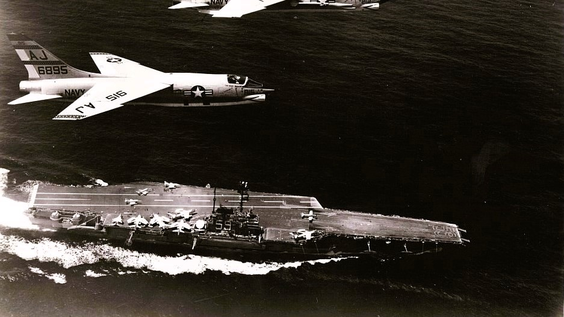

BERANDA
31 Maret 1964 adalah tanggal yang mengubah sejarah Brasil selamanya. Kudeta militer yang menggulingkan Presiden João Goulart tidak hanya mengakhiri pemerintahan demokratis, tetapi juga memulai 21 tahun kediktatoran militer yang ditandai dengan represi, penyiksaan, dan penghilangan paksa.
Dokumen-dokumen yang dideklasifikasi ini mengungkap peran ████ dalam operasi ██████████████, keterlibatan ██████████, serta kronologi lengkap bagaimana demokrasi Brasil runtuh dalam waktu 48 jam. Gunakan navigasi di atas untuk menjelajahi setiap babak dari peristiwa bersejarah ini.
FOTO RAHASIA

Kapal induk USS Forrestal, bagian dari Operation Brother Sam, berlayar menuju perairan Brasil.

Kendaraan lapis baja menduduki pusat kota Rio de Janeiro.
STATISTIK KUNCI
"Saya tidak ingin menjadi presiden yang dekoratif. Saya lebih baik bertahan dengan rakyat saya."
KRONOLOGI SINGKAT
DOKUMEN RAHASIA
MEMO CIA: ESTIMASI INTELIJEN NASIONAL NO. 93-63
"Jika Goulart terus mendorong reformasi radikal, militer Brazil kemungkinan besar akan melakukan kudeta. AS harus siap memberikan dukungan tidak langsung untuk memastikan pemerintahan baru yang pro-Barat."
OPERATION BROTHER SAM: INSTRUKSI ARMADA
"Armada akan diposisikan di lepas pantai Santos. Jika pasukan 'Castelo' membutuhkan dukungan, kirimkan 600 ton amunisi dalam waktu 24 jam. Presiden Johnson telah memberikan otorisasi penuh."
SEBUAH SORE YANG TENANG: 30 MARET 1964
"Sore hari, 30 Maret 1964, menjadi titik krusial bagi masa depan demokrasi Brasil. Para konspirator militer terjebak dalam perdebatan sengit mengenai kepastian garis waktu kudeta — apakah akan diluncurkan fajar esok, atau ditangguhkan di bawah kendali Castelo Branco."